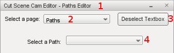

Table of Contents:
Cut Scene Cam Overview
Features List
Cut Scene Cam Editor
CSCE Overview
CSCE Object Creation
Path Management
CSCE Pages
CSCE Bottom Buttons
Setting Variable Values
General Rules
Other Variables
Adding New Datablocks
Application Programming Interface (API)
Starting a Cut Scene
Choreography
Path Alteration Scripting
Overview of Source Code Changes
Known Issues
Cut Scene Cam Overview:
The Cut Scene Cam is mainly about camera work, with a little bit of choreography thrown in.
Features List:
- Create a pathed camera object and set it to follow a given path.
- Per-node speed and smoothing options.
- Can pause on a node for a specific amount of time.
- The camera can be set to shake for a certain period of time per-node, with options for the amount of shaking.
- Can set a fade to black GUI overlay for the beginning of each path, and for the end of the cut scene as a whole.
Can select a color other than black as well.
- When the camera reaches the end of the path, it can be set to (in order of highest priority first):
- loop along the same path
- reverse its direction along the same path and pingpong
- start on a new path (popping to the first node of the new path), this can be done after it has done any of the above
- switch back to your normal player/camera controls, this can be done after it has done any of the above
- Can set a counter for how many times you would like the camera to loop or pingpong before switching back to the player or
normal camera. Can also be set to go around infinitely, and if not set to infinite, it can go to a new path after it is done looping.
- Can specify a function call for the start of each path, plus onEnd is called when its all over (to add in your own
schedules and other custom scripts for choreographing a scene).
- Focal mode options:
- have the focal point be a direction (can optionally choose an axis of rotation)
- have the focal point be the direction it's traveling in
- have the focal point be a static or moving object/player/bot (with optional offset)
- have the focal point be a static position
- Cut Scene Cam Editor:
- can edit any options listed above
- can save your mission from the editor
- can start a cut scene to test it; the editor will hide during the cut scene and come back after its over
- can change the time scale, zoom speed, and shake data for each path
- can change the FOV, speed, shaking, smoothing type, and type per-node
- can open the PostFX Manager from a button (to setup DOF and whatnot)
- can change all focus options from the editor
- can test camera shake setting from the editor
- has path and node creation, deletion, editing, and management options; including all path options from
The UAISK's AIME
- Compatible with T3D MIT 3.10.
UAISK and
AFX compatible.
Cut Scene Cam Editor:
CSCE Overview:
A path is like a type of folder (or simgroup) that contains nodes. Nodes are invisible objects that are placed around your mission.
The Cut Scene Cam uses both of these to store the data that it uses.
To help aid you when creating and adjusting these, the Cut Scene Cam includes an editor called the Cut Scene Cam Editor (CSCE).
Press "Alt S" to open the editor. You can also add the Cut Scene Cam Editor to the "Edit" drop down menu in the world editor
by doing the "Optional Custom Install Instructions".
The default Cut Scene Cam Editor should look similar to the following image.

- Title: At the top of the editor you'll see that it says "Cut Scene Cam Editor - " then the name of the page you are currently on.
- Page Selector: From the page selector you can set what information you would like the editor to display. Detailed descriptions
of each page are below.
- Deselect Textbox: If you have selected a textbox to type in a value, you will be unable to move using the keyboard and will type
instead. You can unselect the textbox using this button. After it is no longer selected, you are free to move your character
or camera around again using the keyboard.
- Path Selector: From here you can select which path you would like to edit from a list of all previously created paths in
the mission. When you select a path with the CSCE, it will also show up selected in the world editor if the world editor is
open. When you select a path, you'll see all of its values in the editor until you apply, or select a different path. If
the path doesn't have a value on it, the editor will show the overall default value. This element is not on the Creation page.
CSCE Object Creation:
Path and node creation and deletion can only be done from the "Creation" page. All other pages are only used for editing
these existing objects or for supplemental tasks.
"New Path": When pressed, will create a new path. A path can be selected from the dropdown menu to the right of this button.
"New Node": When pressed, will create a new node on the currently selected path. This node will be placed at your current
position. The node's position will be the current position of the player or camera; depending on which one you are using at the time.
A node can be selected from the dropdown menu to the right of this button.
"Delete Selected Path": When pressed, the currently selected path will be permanently deleted.
"Delete Selected Node": When pressed, the currently selected node will be permanently deleted.
To prevent accidents, the "delete" buttons can be disabled from a global
variable at the top of CSC_Editor.cs.
Path Management:
The tools on the "Path Management" page of the editor allow you to manage a path as just one object instead of having to make
separate changes to each individual node that makes up that path. Changing individual node and path properties can be done from
the "Paths" and "Nodes" pages.
The "Clone Path" button will copy the path and apply the given offset to the new copy. Cloning makes a new copy of the path with
copies of each node and uses the same properties for the nodes and path, plus an optional offset to each node's position. "Move
Path" applies a given offset to each node on the selected path without making a new copy.
The "Scale Path" feature allows all 3 axes to be scaled independently. Values are given as a percentage. The values can be positive
to make the path larger, or negative to make it smaller. Zero can also be used to not have an axis scale. Values of less than
-100 will flip the path inside out; because it's making the path more than 100% smaller; and -100 exactly will make the path
into a dot.
Scale can be given as just 1 value to have the path scale evenly in all directions. Given as 2 values, the path will scale on
the X and Y axes only; or given as all 3 values for separate X, Y, and Z scaling.
You can use the "Flip Path" button to turn over a path along its X, Y, Z or All axes.
The "Merge Paths" button will take all the nodes from the selected path and add them to the end of a second selected path; and
will then delete the first path which is now node-less. The second path is the one that is selected from the dropdown menu to
the left of this button. Warning: Using the "Merge Paths" feature while the mission editor is open
can cause your game to crash.
The "Split Path" button will take all nodes after the given amount and move them from the original path onto a newly created
path.
The "Reverse Path" button inverts the order the nodes are in along the path. This will cause any bots to move in the opposite
direction when traveling along the path.
When open, the mission editor does not update the nodes' visual positions properly when using these commands. You may need to
close and reopen the mission editor to see the nodes' correctly updated positions.
CSCE Pages:
The Cut Scene Cam Editor has 7 pages. They are: Creation, Paths, Nodes, Focus, Fade, Management, and Actions
If you don't see the setting you're looking for on one page, try another. Check the editor's text and tooltips for help with
any specific variables.
• Creation
Create and delete paths and nodes. Further details can be found in the CSCE Object Creation section above.
• Paths
On this page you can edit the properties of paths that have already been created. This page contains per-path properties. These are
properties which would not make sense to set on a per-node basis. Properties such as if and how the path loops, what path it go to
after the current one is finished. This page also allows you to set a Function Call. A Function Call is a line of script that
is executed using an eval when a path is first started. For more information about the Function Call,
check here.
• Nodes
On this page you can edit the properties of nodes that have already been created. This page contains per-node properties. These are
properties which would not make sense to set on a per-path basis. Properties such as the order the nodes are in, and the speed and method
that the camera moves from one node to the next.
• Focus
On this page you can change the focus options. The Focal Mode sets what the camera should face and stay centered on. There are 4
focal modes to choose from: Direction, Ahead, Object, and Location.
- Direction (which is the default) will set the camera to face a specific angle. You can select which axis you would like the camera
to rotate around, and the amount (in degrees from -360 to 360) you would like it to rotate.
- The Ahead focal mode will simply have the camera face in the direction it is traveling in. Think of this like being on a roller coaster
in a first person view.
- The Object focal mode will set the specified object to always be where the camera faces. The object can be a static object, a player,
or an AI bot. Examples for the latter two have been built in. You can also add an option Offset value which will allow the camera to
not have the object exactly centered.
- Finally, there's the Location focal mode. This focal mode will point the camera at a specific position that you give it.
• Fade
This page allows you to change the timing and color for fading in and out.
• Management
From this page you can change the attributes of each node on an entire path at one time. Attributes that can be changed include
scale, position, and direction. Further details can be found in the
Path Management section above.
• Actions
On this page you can perform a variety of actions that will help you as a developer.
It is important to give paths a unique name when creating new ones. Unnamed paths will automatically be named "PathXX",
with XX being their number based on order of creation. However, if for some reason the paths' order gets mixed up, you can
use the "Rename Paths" button to reorder them again. Giving each path a unique name both avoids some minor issues and helps
you when editing. This button will also automatically name all of the waypoint nodes on your paths as "NodeXX", with "XX" being
there number in order.
You can also test a camera's or datablock's shake settings.
CSCE Bottom Buttons:
After you have made all changes you wish to make to a single path or node, use the "Apply Path Edits" or "Apply Node Edits" button
to apply the changes. You can switch pages (but not paths or nodes) before you apply
and any values that you have changed will be correctly saved when you apply. You need to apply changes once per path or node.
Edit buttons are not on the "Creation", "Management", or "Actions" pages.
The "Start Cam" button will allow you to see what your cut scene will look like. It will temporarily hide the CSCE so that it
doesn't block your view of what's happening. The camera will start from whichever path is selected. So if you have multiple paths
that are linked together, it will only test the selected and any that come after it.
The "Save Mission" button will save the mission whether or not anything has been changed; and it does not have a "save as" option,
it will only do a normal save.
Setting Variable Values:
General Rules:
No numbers can be negative or zero unless otherwise noted. Be careful when using values of 1 or less. Distances can use decimal
point values (floats), but most other values should use whole integers only (ints). Don't stray too far from the default values;
for example- if the default is 6, you probably shouldn't change it to 9006. Capitalization and the order you put the variables
in shouldn't matter.
Other Variables:
Here's a brief description of some of the default global variables. For the values of these variables, follow the
general rules.
|
Variable name
|
Description of what it does
|
File it's found in
|
|
$CSC_Speed
|
Default movement speed. Speed is not a 0.0 to 1.0 value even though some Torque documents may say that it is.
|
CSC_userValues.cs
|
|
$CSC_Name
|
Default path name.
|
CSC_userValues.cs
|
|
$CSC_Client
|
Default client.
|
CSC_userValues.cs
|
|
$CSC_Datablock
|
Default shake datablock.
|
CSC_userValues.cs
|
|
$pref::Player::defaultFov
|
Default field of view. This value is part of stock T3D and used other places, it is not for the Cut Scene Cam only.
|
CSC_userValues.cs
|
|
$pref::Player::zoomSpeed
|
Default zoom speed. This value is part of stock T3D and used other places, it is not for the Cut Scene Cam only.
|
CSC_userValues.cs
|
|
$CSC_DisableDeleteMode
|
Change this to 1 to get rid of the "Delete Selected Path" and "Delete Selected Node" buttons, leave it 0 to have those buttons available.
This is to prevent accidents since there is no undoing a deletion.
|
CSC_Editor.cs
|
|
$CSC_SelectNextMarker
|
When editing a pre-existing path or node, after changes are made to the current one, should the next one selected be lower or higher?
This value can also be changed from the Actions page of the CSCE.
|
CSC_Editor.cs
|
Adding New Datablocks:
The only time it should be necessary to add new pathed camera datablocks is when you want two or more different paths in your
game to use different shake settings. All other options are done per-path or per-node, meaning that making a new datablock
for them is not needed.
In the file CSC_userValues.cs you will see both a default datablock and an example of how to create a new datablock.
Make sure to give your new datablock a unique name, and to set all 3 camShakeFreq values to be different from each other.
Application Programming Interface (API):
This section contains script commands that may be used by you (the developer) to perform a wide variety of different actions.
These commands are for use in conjunction with your own custom code, so some experience with TorqueScript may be necessary to
perform certain tasks with these commands.
Starting a Cut Scene:
Now that you've used the CSCE to setup the perfect scene, you'll need that scene to actually play when you want it to.
This can be done from a simply function call.
startCameraGoing(%path, %client);
The above call can be placed into any script that you have. Both %path and %client can just use the default
global values if you don't give another value. Below is an example of how this call can be made from a trigger. It will
play a cut scene one time as soon as the trigger is entered.
datablock TriggerData(cutSceneTrigger)
{
tickPeriodMS = 125;
};
//This plays a cut scene after the trigger is entered by a player
function cutSceneTrigger::onEnterTrigger(%this, %trigger, %obj)
{
//Check to see if a player triggered this
if (%obj.getClassName() $= "Player")
{
//Don't play the cut scene a second time
if (!%trigger.doneOnce)
{
//We've now triggered this trigger once
%trigger.doneOnce = true;
//This just uses the default path which is normally "Path01"
%path = $CSC_Name;
//Other %client values could include $CSC_Client; or "LocalClientConnection"; or ClientGroup.getObject(0);
%client = %obj.client;
//Start the cut scene
startCameraGoing(%path, %client);
}
}
}
Below is an example of how you can start a cut scene once the player collects an item.
datablock StaticShapeData(CutSceneItem1)
{
category = "CutSceneItems";
//Change what shape is used
shapeFile = "art/shapes/items/patch/healthpatch.dts";
};
function CutSceneItem1::onCollision(%this, %obj, %col)
{
//Make sure a live player picked up the item
if (%col.getClassName() $= "Player" && %col.getState() !$= "Dead")
{
//Delete the item
%obj.delete();
//Start the cut scene using default values
startCameraGoing();
}
}
Choreography:
While the Cut Scene Cam mainly deals with camera work, there are a few features to you with choreographing your cut scene as well.
While your cut scene is playing, you will likely want other things to happen at the same time so that the player can see those things.
The Function Call feature and onEnd function can help you with this timing. The Function Call feature can be
accessed from the Paths page of the CSCE.
At the start of each path any script that's set as the Function Call will be executed using an eval. For example, you
could use the following as a Function Call to hide the PlayGui.
HudlessPlayGui.toggle();
But what if you want to script to be executed in the middle of a path instead of at the start? You could put a schedule
within the function that's being called; or you could put a schedule in the Function Call itself. Here are a couple of examples
for how you could do that. Of course you would only use one of these at a time, and without the comments (which are there to
illustrate how schedules should be formatted).
//schedule(%timeMS, %obj, %function, %varA, %varB);
schedule(1000, 0, setFov, 70);
//%obj.schedule(%timeMS, %function, %varA, %varB);
HudlessPlayGui.schedule(1000, toggle);
If your cut scene needs complex choreography that requires more than one function to be called, the best way to handle that
is probably to make a new function, then call that function using the Function Call feature, and have it call any other
functions as needed.
After a cut scene (which can contain multiple paths that are used in a row) is completely over, a function named onEnd
is called. This function can be used to reset or load things after the cut scene is done. You can find this function within
the file CSC_userValues.cs.
Path Alteration Scripting:
For any number of reasons, there may come a time when you'd like to change a path in your game while the game is running. Here
are a few functions that can be called from any custom script you create to help you do that.
If you would like to reverse the direction which bots travel along a path, you can do so using the following command.
reversePathOrder(%path);
Where %path is the ID number or name of the path whose direction you would like to invert.
However, reversing the path's direction while a bot is using the path can sometimes cause the bot to skip nodes; depending on
where the bot is along the path when the reverse happens. But at other times, the direction inversion will occur without issue.
If you would like to move the whole path at once by a certain amount, you can do so using the following command.
moveWholePath(%path, %offset);
Where %offset is the amount you would like each axis of the path's position to change by. And of course if you'd like
to change the position of just one node, you can use the stock Torque command:
%node.setPosition(%pos);
Where %node is the ID number or name of the node whose position you would like to change, and %pos is the new position
you would like it to be located at.
If you would like to change the scale of a path, you can do so using the following command.
rescalePath(%path, %scale);
Where %scale is the percentage you would like each axis to be rescaled by.
For more information about these features, check the Path Management
section above.
Overview of Source Code Changes:
Within guiFadeinBitmapCtrl.cpp a new persist field was added. This new field is called invert and it determines whether a given
fade GUI is fading in or fading out.
For documentation about any newly added engine methods for pathed camera, check the file pathCamera.cpp or use %cam.dump(true); where
%cam is a reference to a pathed camera.
You may want to adjust some of the CameraAndFOV settings in the gameFunctions.cpp file.
For more information about the stock settings and options in T3D, check
the documentation here.
Known Issues:
- The "Ahead" focal mode maybe slightly inaccurate from where it should face along the path and has minor jittering. These are both caused by not
being able to get the camera's future position along its path without actually having it move to that position. A new function to do that needs
added in the cameraSpline.cpp/h files.
- The camera may jitter a bit if set to follow a moving object (such as a bot).
- FOV may not be set properly if the camera pauses at that node.
- It isn't setting the FOV fast enough on the first node, and sets it too fast on the last one. This means that it renders odd for about 1 frame (at 30 FPS).
- Currently you have to click the fade color selector multiple times before it comes up.
- There are limits on the size a path can be. The maximum is at most 64 nodes; but possibly even as low as 45 or 20. There's also a minimum of 2
nodes per path. If you want a camera to be stationary, just place 2 nodes at the same position.